このサイトでは僕が普段使っているアプリやなどを紹介していきます
N校のレポートであったらいい拡張機能なども少しだけですが載せています
PC用はのアプリとして書いています
スマホ用はAndroidでは出来ると思いますがは出来るかわかりません
「┗
」にあるものなどは繋がっているものと同じ欄で紹介しているので分かりやすくするため付けました
アプリ
PC用
「 SteelSeries GG 」 とりあえずのPC持ってたら入れろってくらいすごいと思った
┗ 「 Insights Capture 」
ゲームのキャプチャに使えます
「 Volume2 」 音量変更をとても簡単にわかりやすく
「 Discord Canary 」 Discordのアルファ版です
通話などの不具合の原因が自分なのか分かったり割と便利 (Modも)
┗ 「 Discord PTB 」
Discordのベータ版です Canaryと同じ使い方ができます
「 Wallpaper Engine 」 デスクトップ背景を動かせる
「 Rainmeter 」 ちょっと古いけどWallpaperEngineと組み合わせると最高
「 GeekUninstaller 」 簡単にアプリのアンインストールができる
「 Everything 」 PC内のファイルを簡単に検索出来る
「 SendAnywhere 」ファイルを別機種などに共有できる
「 Power Toys 」 が無償提供しているとても便利なアプリ
「 Rapture 」 画面をスクショしてそのまま付箋のように画面にピン留め出来る
「 QTTabBar 」 エクスプローラーをめっちゃ便利に
「 EarTrumpet 」 音量の表示を詳細まで表示してくれる
「 SteelSeries GG 」
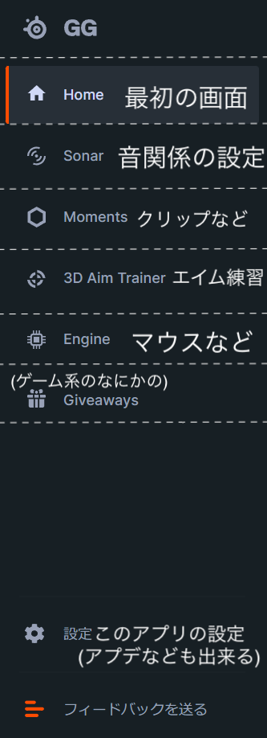
このアプリはSteelseriesという僕の使っているマウスのメーカーが出しているアプリです
このアプリで出来ることは
・Sonarという機能でイコライザなどを追加
・エイムのトレーニング
・ゲームのクリップ(自動も手動も可)
・SteelSeriesのガジェットの管理,設定
このように「ゲーミング(ゲーム用)」と「チャット(Discordなど)」と「MEDIA(youtubeなど)」と
「AUX端子(多分予備)」と「マイク」に分けられて、一つずつの音量などを変えることが出来ます
友達と通話しながらゲームをやったり、音楽を聞いたりするときに個別に音量設定ができるので楽です
下にある「Volume2」と組み合わせて使うととても便利です
さらにここにあるStreamer modeを押すことで、、、
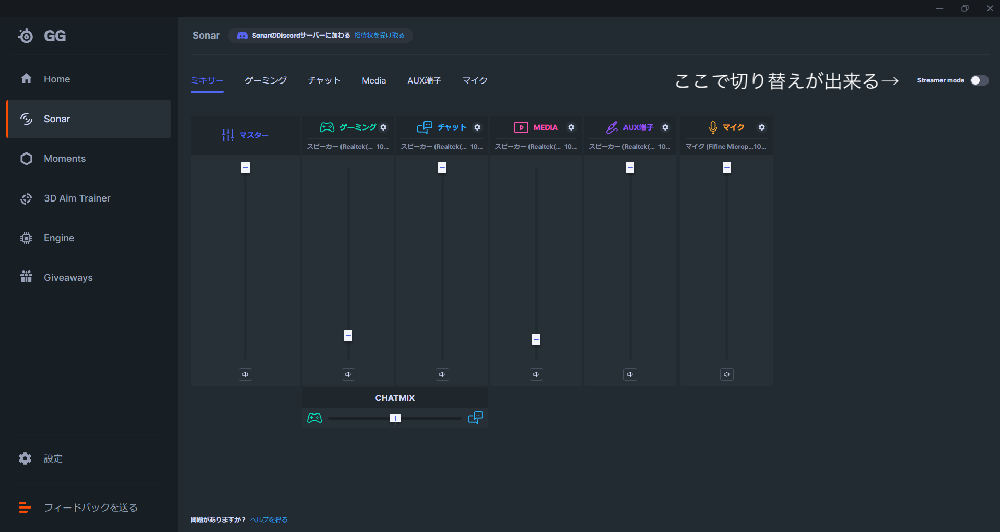
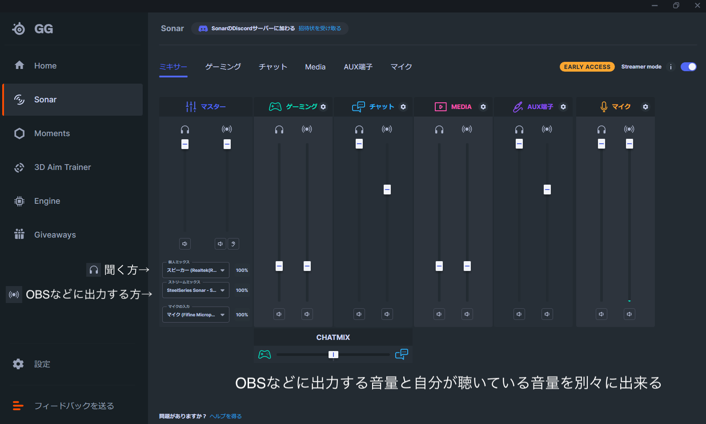
このようにデバイス(ヘッドホンなど)に出力する音量と、OBSなどに出力する音量ごとに変えることが出来るようになります!
次はSonarにある項目(ゲーミング、チャットなど)の説明です
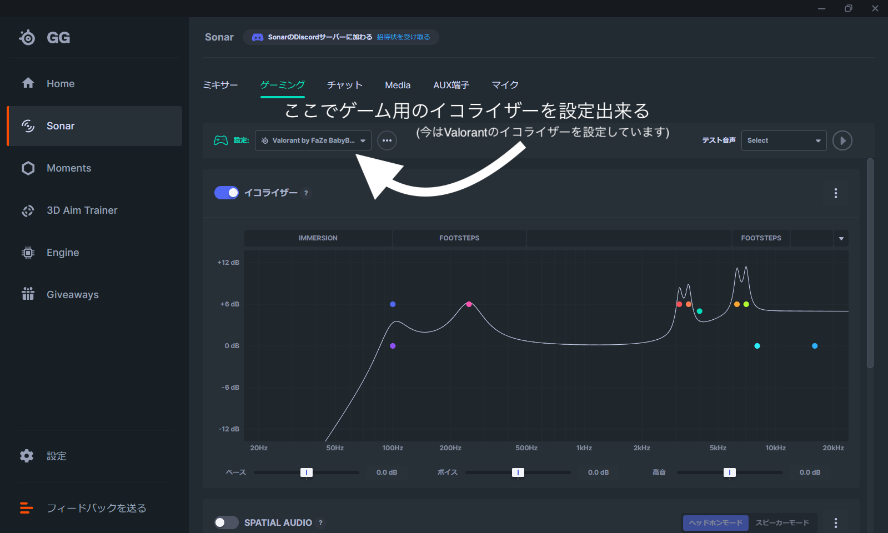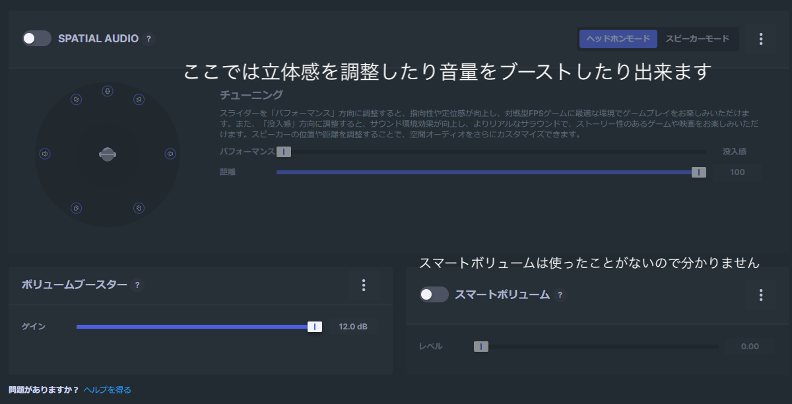
上にある二つの画像はゲームについての設定画面です
ここにはさまざまなゲームのイコライザ設定が最初から入っていて、自分がプレイするゲームに合わせて最適のイコライザでプレイすることが出来ます
その下の画像の説明です
「SPATIAL AUDIO」 ここでは立体感の調節ができますが、ゲーム,音楽などのどの音でも(僕は)必要ないなと思ったので消しています
「ボリュームブースター」 音量をブーストすることが出来ます
「スマートボリューム」多分すごいスマートなんだと思いますが僕は使ってないので分かりません
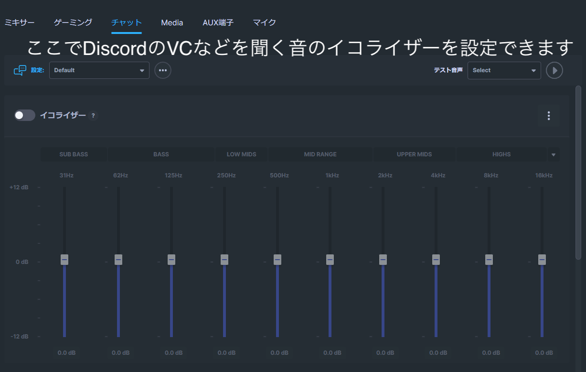
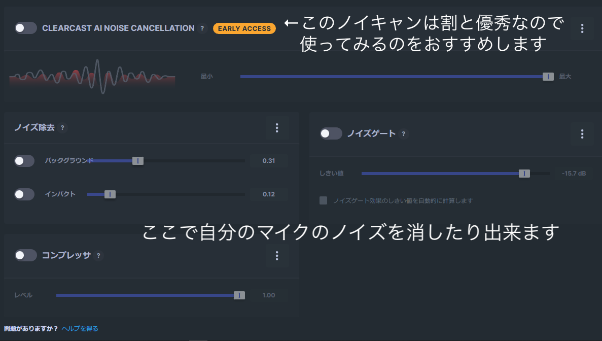
上の二つの画像はチャットについての解説です。まず、イコライザーから、、
僕はいろいろ試した結果つけていませんが、人によって感覚も違うと思うのでいろいろ試してみてください(最初から何個か設定がある)
そして次の画像の説明です
「CLEAR CAST AI NOISE CANCELLATION」
これは声以外をちゃんとAIが選んで消してくれる(らしい)ノイキャンです
前までSteelseriesのヘッドセットしか出来なかった設定ですが、更新で出来るようになりました!
ノイキャンがついてない通話アプリ(SlackやLine、Twitterのスペースなど)などに使っています
ただたまにDiscordなどでもノイキャンをつけてくれない人がいるのでその時にも使えます
この設定を変えることで自分が聞く時の音だけノイキャンをするという感じです
「ノイズ除去」&「ノイズゲート」これは前からあった設定ですが先ほどのノイキャンで十分なので要りません
「コンプレッサ」コンプレッサーは、音を圧縮することによりダイナミックレンジ(音量の大小の幅)を狭めるエフェクトらしいです(引用元リンク)
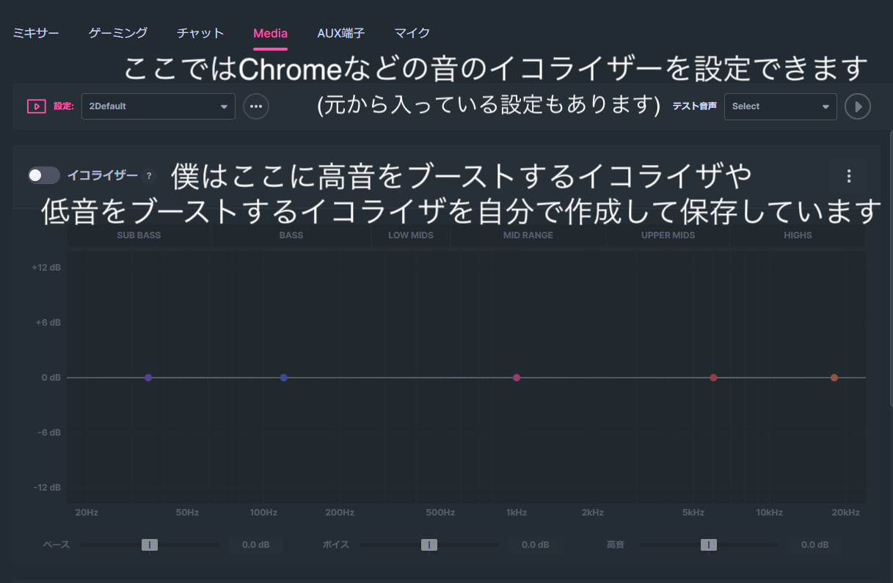

次にMEDIAに関しての設定です
ここでは他のイコライザと同じように使うことができます
僕はこのイコライザーで高音ブースト用、低音ブースト用などに分けた物を自分で設定を保存しています
したにあるSPATIAL AUDIOなどはゲーミングにある物と同じです
そして「AUX端子」もMEDIAと内容は同じです
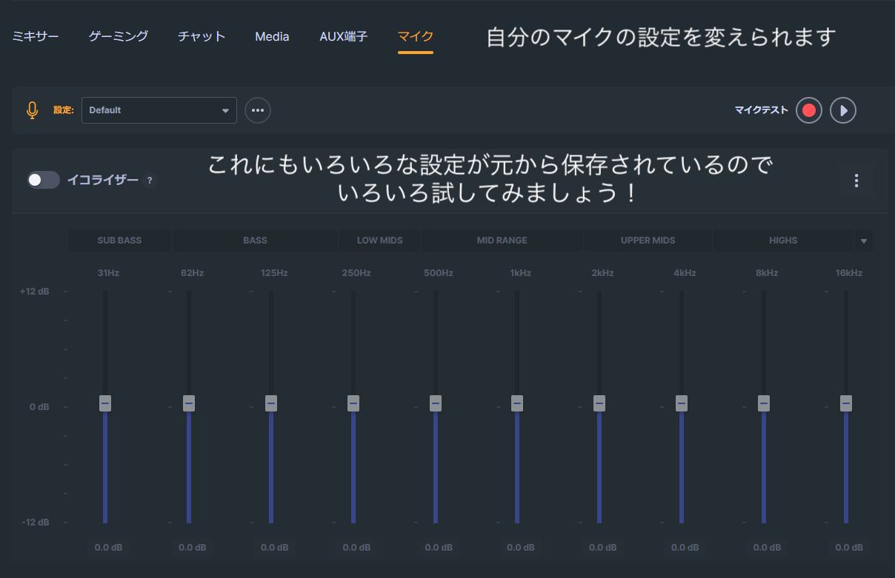
最後にマイクについてです
これは自分のマイクの設定を変更できます
イコライザも設定できますがやっぱりノイキャンが便利でいいです
ノイキャンの内容は「チャット」と変わりませんが
チャットは自分が聞く側のノイキャン で
マイクは自分のマイクから相手に聞こえる音へのノイキャン
と考えてください
ちなみに僕はValorantをする際にはゲーミングでValorantの音を聞いて、チャットでDiscordの通話を聞いて、MEDIAでChromeの音(YoutubeでBGMなど)を聞いて、AUXでValorantのVCを聞いています
そしてエイムのトレーニング「3D Aim
Trainer」ですが、さまざまなゲームに対応しているので結構おすすめです
(Apex,Fortnite,Valorantなどが好きなら一回やってみることをおすすめします!)
次にゲームのクリップ「Moments」です。これはまだ他のアプリの方が優秀なのでそっちをおすすめします
そのアプリの名前は「Insights Capture」 このアプリの説明は省きますがダウンロードリンクはこちらです(Insightsの方)
最後に「Steelseries GG」はどんどんアップデートされていっているので新しい機能がどんどん出てきます
(紹介しているのは6月1日での内容)なので今後のアップデートにも期待できます!
詳しくは下記のボタンで公式サイトに飛べますできます!
これは「Steelseries GG」のリンクです↑
「 Volume2 」
このアプリは音量を上げたり下げたりすることをめっっっっちゃ簡単にするアプリです
いろいろ設定で変えることが出来ますが、僕はタスクバー上にカーソルでマウスホイールを回すことで音量を上下できるようにしています
さらに設定を変えることでAlキーtを押している際に別のデバイスの音量を変えることが出来ます
この機能を先程紹介したSteelseries
GGと組み合わせて使うことで使うことで何も押さない時はタスクバーでゲーミング(デフォのサウンド)の音量を変えてAltキーを押しているときはMEDIAの音量を変えることが出来たりします
こーれがめちゃくちゃ便利なので本当に！おすすめです！
「 Discord Canary(PTBも) 」
Discordのコピーみたいな物と思ってもらって良いです
僕は使ってないですが、Discordにmodを入れる際はCanaryかPTBを使うのが多いらしいです
通話の声が聞こえない時などのトラブル対策で僕は入れてますが、特に理由がなければ入れなくても良いと思います
ただ入れといても全然良いと思うので紹介しました
下がダウンロードリンクです(ここを押したらすぐにexeファイルのダウンロードが始まります)
「Discord PTB」はDiscordのベータ版です(canaryとほとんど使い方は同じ)
下はPTBのダウンロードリンクです
「 Wallpaper Engine 」
デスクトップ画面に動く壁紙を設定出来るアプリ
自分で用意した動画を背景にすることも出来るし、アプリ内に色々な種類の動く壁紙があるのでそれを使うのも出来ます
中にはオーディオスペクトラムがある背景もあるのでとても面白いです
アプリ内にあるものにはアニメの物やゲームの物、車などかっこいいものからかわいいものまでたくさんあるのでいろいろ検索してみるのも良いと思います！
このアプリはSteamで500円くらいで売っています
下がSteamにあるこのアプリのリンクです
「 Rainmeter 」
先程紹介したWallpaper Engineと一緒に使うことでもっとデスクトップをカスタマイズ出来るアプリ
こちらは無料なのですが、これだけだと動く背景にすることはできませんが、WallpaperEngineでは出来ないことも出来たりするのでどちらも使うことで自分の思いつくアイデアの通りのデスクトップ画面を作れるかも!
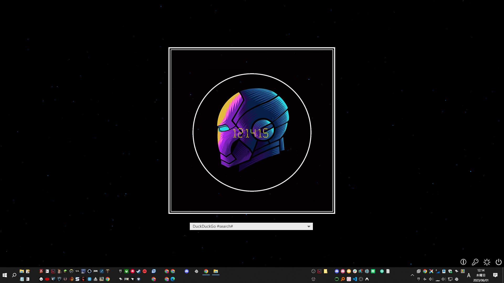
僕はこのRainmeterとWallpaperEngineを使って上の画像のデスクトップにしています
WallpaperEngineとRainmeterの違いとして僕が思っているのは
見た目が動いたりするのが得意なのがWallpaperEngine、
クリックなどで何かを実行したりするのが得意なのがRainmeter。
と思っています!
下がRainmeterのダウンロードと使い方のリンクです
「 GeekUninstaller 」
このアプリはインストールしたアプリを簡単にアンインストール出来るアプリです
アンインストーラとして使うのはもちろん、今自分が入れているアプリの一覧を表示してくれるので容量を圧迫している原因を探すことにも役立ちます!
下がダウンロードリンクです
「 Everything 」
PC内のファイル検索に便利です(確かめっちゃ早い)
「 SendAnywhere 」
自分のPCとスマホなど、ほかの端末とファイルを共有する時に使えます めちゃくちゃ簡単に出来るので重宝しています
「 Power Toys 」
パワーユーザー向けに提供されているMicrosoft公式のシステムユーティリティ群...です！
普通に便利なものが入っているのでこれがなんで標準でないのか疑問になるレベルです
僕がよく使う機能を紹介します
1,「PowerToysRun」
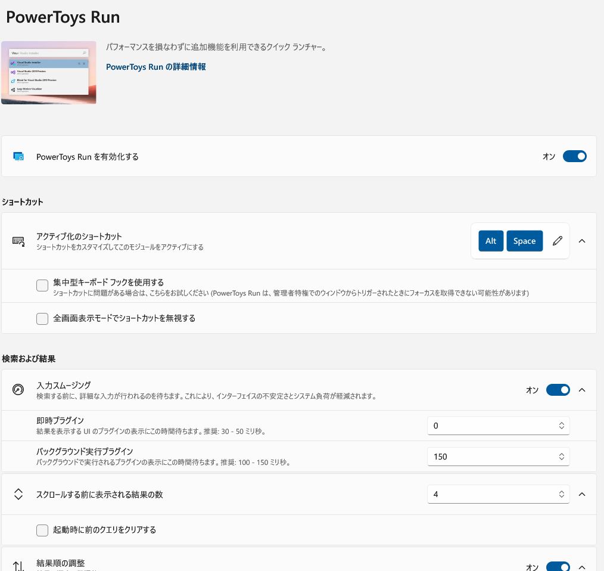
MacにあるSpotlightのようなものです
とても扱いやすく、僕はめちゃくちゃ高頻度で使います
2,「Text Extractor」
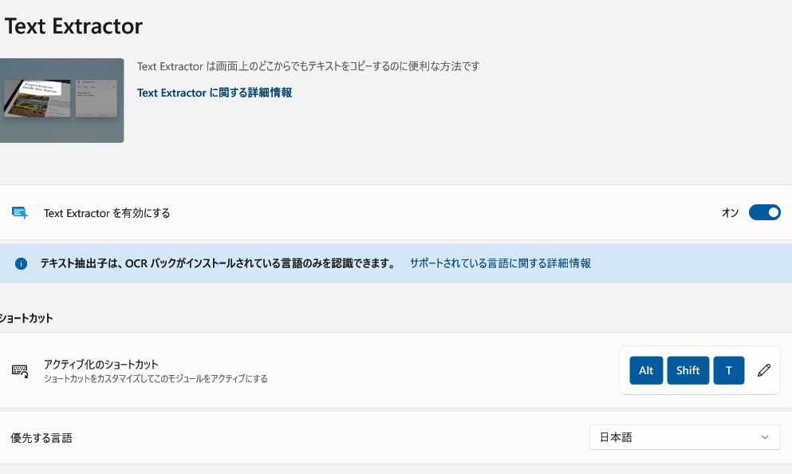
画像などから文字をコピペできます
普通にちゃんと便利です
あんまりたくさんは使わないけど「痒い所に手が届く」的な感じです
3,「Color Picker」
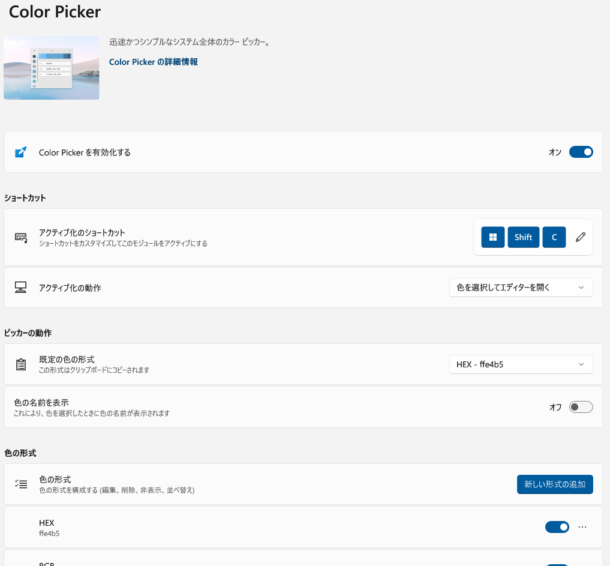
スポイトです
使ってみたらわかる使いやすさがあります
正直これは別のアプリでも簡単に代用できそうです
他にもどんどん機能が追加されていく(はず)なので入れておくことをおすすめします!
ダウンロードリンクは下です(使い方もそこにあります)
「 Rapture 」
画面を選択してその選択したところを画面にピン留めすることが出来ます！
レポートをする際にとても便利です(Macbook版も別名であります)
こちらがダウンロードリンクです。使い方、説明もあります!
「 QTTabBar 」
エクスプローラーをめっっっっっちゃ便利に変える神アプリです
Windows10を持っているなら必ず入れてみましょう!
どのように変わるかを簡単に箇条書きと画像で説明すると、
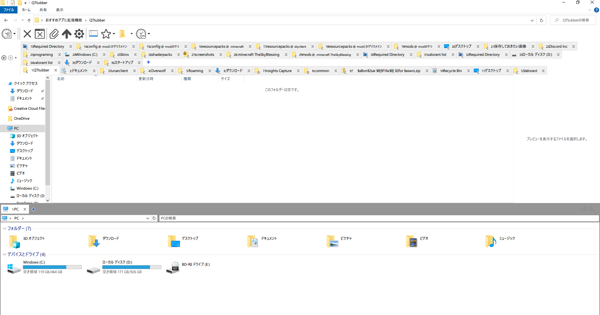
・Chromeであるようなタブ機能(画像のような)
・一つのウィンドウで分割できる
・フォルダを開いている時にそのフォルダの何もないところをダブルクリックで一つ上のフォルダに飛べる
などいろいろ便利な機能があります
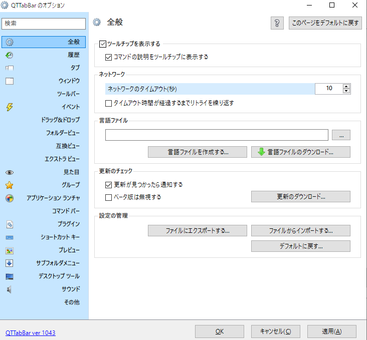
上のように設定もたくさんあります
このアプリのダウンロード方法はこちらです
この使い方などは個々で調べるのが一番だと思ったので省きました
「 EarTrumpet 」
音量の設定を変えるタスクバーのアイコンを改良することが出来ます
こちらはあまり使うことはないですが入れて損はないので一応入れておくべきだと思います！
初めにでも言いましたがこのサイトではアプリやChrome拡張機能などを紹介しました
結構ブログみたいな内容になりましたが結構勉強や経験になったと思うので良かったです
そしてこのサイトを作成しようと思った理由に自分の今入れているアプリや拡張機能で忘れているものを思い出して、頭の中を整理したり、PCの初期化時や新しいPCを買ったときのためという目的もありました
なので(とても時間はかかりましたが)完成させることができてよかったなと思いました
結構ブログみたいな内容になりましたが結構勉強や経験になったと思うので良かったです
そしてこのサイトを作成しようと思った理由に自分の今入れているアプリや拡張機能で忘れているものを思い出して、頭の中を整理したり、PCの初期化時や新しいPCを買ったときのためという目的もありました
なので(とても時間はかかりましたが)完成させることができてよかったなと思いました